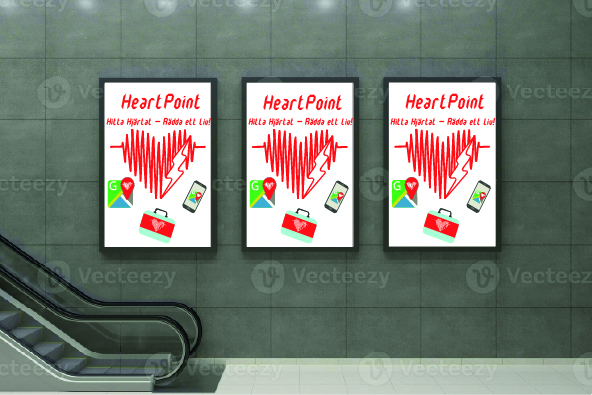

Affisch i miljö
Affisch i offentlig miljö
Här visas HeartPoint-affischen placerad i en urban miljö. Syftet är att snabbt fånga förbipasserandes uppmärksamhet och göra dem nyfikna på konceptet och tjänsten som hjälper dig att hitta närmaste hjärtstartare.
